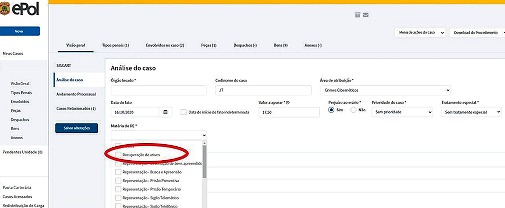

O capítulo anterior cuidou de incutir na mente dos novos policiais federais a ideia de que há uma metodologia na investigação policial. Como vimos ao longo de toda esta disciplina, a investigação policial é uma atividade técnica, realizada com um conjunto de ações que são aprendidas. Podemos afirmar que investigação policial é algo que pode ser aprendido.
A partir de agora, trataremos dos métodos que podem ser efetivamente aplicados à investigação policial, a fim de demonstrar aos policiais federais que a atividade de investigação de crimes é técnica, isenta, centrada no fato investigado, destinada à busca da verdade, relativa à identificação de autoria, da prova da materialidade e das circunstâncias de um crime.
É imprescindível que o policial tenha conhecimento dos procedimentos mínimos a serem observados no tratamento da notícia de um crime, privilegiando o raciocínio lógico-dedutivo, embora se admita que indução e criatividade, em certa medida, sejam aplicáveis face a cenários desconhecidos e inusitados.
Além disso, reforça-se aqui o princípio de que o método protege as pessoas em torno dos fatos, o investigador, e a própria instituição. Isso reforça o princípio da impessoalidade, indicando que a polícia apura fatos, não importando quem são as pessoas que se situam em torno do evento delituoso, tampouco importando quem são os integrantes da equipe de investigação:
A apresentação desses métodos tem uma necessária finalidade em investigação policial: promover a objetividade, garantir a impessoalidade e evitar que o empi rismo ou os preconceitos de um investigador interfiram na busca da verdade, com efeitos nocivos para a pessoa investigada, para terceiros e para toda a sociedade (SILVA e RIBEIRO, 2018, p. 26)
Dessa forma, evidencia-se a relevância do método e da metodologia no exercício da atividade de investigação policial. O termo método, de origem grega (methodos), refere-se à busca de determinado objetivo por meio de um caminho previamente delineado. Já a metodologia consiste no estudo sistematizado desses caminhos possíveis, compreendendo a análise, a estruturação e a aplicação de procedimentos que orientam a atividade investigativa de forma racional, organi zada e tecnicamente fundamentada.
Nesse contexto, o presente capítulo não pretende definir que há apenas um método específico, mas chamar a atenção para a obediência a eles, dentro dos parâmetros, atos normativos e protocolos de atuação do órgão, assim revelando as diversas estratégias de investigação que podem ser adotadas pelo policial diante da resolução de um evento criminoso. Em relação ao método investigativo, seja ele qual for, o importante é que ele esteja fincado em uma base, constituída por algumas etapas sob as quais não deve se afastar, sendo elas: a) Fato: toda investigação policial deverá ter origem em um fato. Por óbvio que, inicialmente, não se terão todos os dados componentes desse fato, cujo conhecimento demandará a investigação. A ausência de um fato certo e minimamente delimitado, por exemplo, tornará a investigação centrada em pessoas. Uma polícia judiciária profissional, obediente às regras de um Estado de Direito, não pratica investiga ções centradas em pessoas, mas sim em fatos previamente definidos como crimes. b) Hipótese: definido o fato, é necessária a construção de hipóteses que levarão o investigador à delimitação do problema e ao direcio namento de suas ações, visando a confirmação ou refutação daquela hipótese. A investigação sem a formulação de hipótese conduz a uma investigação prospectiva, que arrasta tudo e todos em flagrante desrespeito aos direitos fundamentais. c) Checagem: é essencial para validar os dados colhidos durante a investigação. A checagem correta e fiel aos elementos de prova, inclusive, levará a investigação extrajudicial ao atingimento de um dos seus fins precípuos: evitar a formulação de acusações infundadas e a proteção de direitos, quando as provas apontarem para a inexistência do fato ou a negação de autoria. d) Conclusão: irá reunir todas as informações e elementos de prova que possibilitarão o esclarecimento dos fatos e permitirão a instau ração ou não de uma ação penal. A conclusão, a rigor, encerra a investigação, tornando-a eficaz e útil ao atingimento de seu fim.
Além de ter consciência de que o inquérito é o instrumento pelo qual a investi gação se materializa, é importante também ter em mente, conforme dito no tópico anterior, que essa mesma investigação deve obedecer a métodos correlatos aos científicos que vão constituir a forma e os caminhos trilhados pelo investigador para se chegar ao resultado. De igual modo, apresentarão tipologias diferentes no que tange à forma de reação da polícia judiciária em face de um evento criminoso. Diversas são as doutrinas que preconizam tipos de investigação. Por ora, vamos nos apegar aos conceitos de tipos de investigação descritos pela polícia britânica (Core Investigative Doctrine, NPIA – National Policing Improvement Agency), sem prejuízo de outros que vamos comentar mais adiante.
Nessa esteira, podemos considerar a existência de dois tipos de investigação policial: reativo e proativo. A principal diferença entre esses dois tipos é que o método reativo começa com a descoberta de um crime já ocorrido e visa a trazer infratores à justiça, descobrindo dados de interesse que identificam suspeitos e fornecem evidências para provar a materialidade de um crime e, assim, sustentar uma futura ação penal. Tal tipo de investigação geralmente se dá por provocação de terceiros que apresentam à polícia, na forma de notícia-crime ou requisição, uma infração penal já descoberta (Ministério Público, vítima, pessoa do povo, outras instituições, etc.).
Por outro lado, a investigação proativa se dá a partir da detecção de eventos criminosos que estão ocorrendo naquele momento ou que vão ocorrer em um futuro imediato, devendo por isso ser ponderada com as ameaças e lesões que podem representar para os direitos humanos dos investigados e da comunidade em geral. Poderá, deste modo, ter seu início a partir da atuação do próprio delegado de polícia federal, seja ao tomar conhecimento de fato de sua atribuição, seja aproveitando oportunidades (outras investigações, análise de dados de sistemas, relatórios de inteligência, etc.).
O tipo proativo geralmente começa com uma análise de informações de inteligência como, por exemplo, no sentido de que um determinado indivíduo ou grupo está envolvido em atividades criminosas. Muitas vezes, trata-se de crime organizado, como tráfico de drogas, crimes financeiros, desvio de recursos públicos ou tráfico de pessoas e crimes que estão em pleno andamento ou em vias de ocorrer. No que se refere à atuação por sua iniciativa, a polícia age com proatividade por meio da eleição de oportunidades, por meio da análise criminal e tática, bem como utilizando ferramentas de business intelligence (BI) que tornam possível converter dados brutos de ocorrências criminais ainda inexploradas em insights para utilização em investigações policiais relevantes e destinadas a desarticular grupos criminosos organizados.
As ferramentas de “BI” são tipos de softwares que coletam e processam grandes quantidades de dados estruturados ou não estruturados. Essas ferramentas auxiliam na preparação de dados para análises, possibilitando a criação de relatórios, painéis e visualizações de dados de forma abrangente. Os resultados dessas análises permitem identificar vínculos e pontos de interesse e de relevo, como a constatação da atuação de uma organização criminosa. Ocorrências avulsas analisadas de maneira isolada podem não fornecer dados suficientes para se determinar, ao longo de uma investigação, a autoria de crimes. Porém, quando essas mesmas ocorrências são analisadas de maneira conjunta, elas podem fornecer os parâmetros necessários para se viabilizar uma investigação policial. Essas fontes identificam grupos ou indivíduos que são avaliados como estando envolvidos em atividade criminosa em andamento. Eles geralmente passarão por um processo de atribuição de tarefas e de coordenação, que então alocará os policiais para uma investigação mais aprofundada.
Casos individuais desses delitos são, em regra, raramente comunicados às autoridades policiais, de modo que as técnicas tradicionais de investigação reativa — tais como entrevistas, interrogatórios e expedição de ofícios — tendem a apresentar limitada eficácia nesses contextos.
Em razão disso, os investigadores passam a empregar um conjunto diversificado de técnicas especiais de polícia judiciária, características da denominada fase velada da investigação. Tais técnicas são estruturadas com o objetivo de esta belecer o vínculo entre os autores e a atividade criminosa, mediante a obtenção de elementos informativos qualificados, aptos a subsidiar a persecução penal de forma eficaz e juridicamente válida.
O objetivo decorrente de uma atuação proativa da Polícia Federal é a modifi cação da lógica investigativa dos delitos, agregando informações em notícias-crime esparsas e transformando-as em investigações mais robustas, iniciadas a partir da gestão e análise de dados de múltiplas fontes, de forma clara e sistemática, atentando-se às atuais diretrizes trazidas no artigo 9º, caput e parágrafo único, incisos I e II, da Instrução Normativa nº 255 DG/PF, de 20 de julho de 2023, e alterações posteriores, que regulamentam as atividades de polícia judiciária da Polícia Federal.
É necessário esclarecer aqui que, mesmo na investigação proativa, a Polícia Federal deve sempre se basear na investigação de fatos e não de pessoas, pois a investigação proativa não se confunde com investigação prospectiva.
Por investigação prospectiva entende-se aquela em que não há causa provável. Em regra, não há justa causa para se dar início a uma investigação policial base ada em fatos objetivos. Mas, no intuito de se buscar algo de criminoso que uma determinada pessoa praticou, inicia-se uma persecução subjetiva, baseada em fatos pregressos e informações fragmentárias que possam construir um perfil suspeito. Nessa prospecção, perde-se o foco de uma investigação de fatos para perquirir pessoas, o que promove uma evidente violação aos princípios constitucionais, notadamente ao princípio da impessoalidade.
Conforme aponta Lopes e Rosa (2019), o processo penal é um instrumento de retrospecção (e não de previsão), ou seja, é o instrumento necessário para se tentar reconstruir processualmente um fato ocorrido no passado (post factum). Ao se utilizar o expediente da fishing expedition (“pescaria probatória”), corre-se o risco de buscar a prática futura e aleatória de possíveis crimes, fazendo com que o Estado se torne um eterno vigilante.
De acordo com Philipe Benoni Melo e Silva (2017), trata-se de situação em que são lançadas as redes da investigação com a esperança de “pescar” qualquer prova para subsidiar uma futura acusação. Ou seja, é uma investigação prévia, realizada de maneira muito ampla e genérica para buscar evidências sobre a prática de futuros crimes (ou até mesmo desconhecidos). Como consequência, não pode ser aceita no ordenamento jurídico brasileiro, sob pena de mal ferimento das balizas de um processo penal democrático de índole constitucional.
A vedação ao procedimento chamado de fishing expedition ganha especial relevo quando o assunto é o limite da atividade probatória requerida pelos órgãos investigatórios, em algumas ocasiões deferida indiscriminadamente pelo Poder Judiciário. É que, como modelo de busca de provas amplo que é, o fishing expedition constitui-se em largo especulativo, autorizador das ferramentas mais intrusivas de investigação criminal.
Práticas comuns de pescaria probatória são a utilização de mandados de busca e apreensão genéricos (sem finalidade ou objetividade de coleta ou sem individualização de destino) e as interceptações telefônicas sem observância dos incisos I e II do art. 2º da Lei n.º 9.296/96 (indícios mínimos de autoria e materialidade ou desproporcionalidade das ferramentas de investigação).
Por fim, cabe observar que os dois métodos de investigação, proativa e reativa, podem se sobrepor, especialmente após um suspeito ser preso. Uma investigação reativa também pode usar técnicas de investigação encoberta como parte da estratégia geral e vice-versa.
Os dois tipos de investigação não devem, portanto, ser compreendidos como compartimentos estanques ou categorias excludentes, mas como estratégias metodológicas que se complementam dentro de uma mesma racionalidade investigativa. A definição pelo viés reativo ou proativo decorre das circunstâncias fáticas, da disponibilidade de informações e da finalidade buscada, podendo haver alternância ou combinação entre ambos ao longo do inquérito. Em qualquer hipótese, contudo, a atividade investigativa deve permanecer ancorada em fatos determinados, orientada por critérios técnicos e jurídicos claros e submetida aos limites constitucionais que regem a persecução penal, assegurando que a eficiência na apuração dos delitos caminhe lado a lado com a preservação das garantias fundamentais.
A investigação policial desenvolve-se em etapas sucessivas e interdependentes. Embora, na prática, tais fases possam se sobrepor ou retroalimentar-se, a sua sistematização permite conferir racionalidade, controle e eficiência ao trabalho policial, evitando improvisações e garantindo observância aos limites constitu cionais e processuais.
Na sequência, serão apresentadas as principais fases que estruturam o desen volvimento da investigação criminal, desde o primeiro contato com a notícia do fato até o seu regular encaminhamento ao sistema de justiça criminal.
a) Instigação ou incitação
É a fase inicial do desenvolvimento da investigação e por meio da qual o policial toma o primeiro contato com a notícia de um fato criminoso. A instigação/ incitação de investigações criminais pode ocorrer de várias maneiras:
Independentemente da modalidade de instauração, é imprescindível compre ender que a fase de instigação integra formalmente a investigação policial e, como tal, submete-se às disposições do Código de Processo Penal e aos princípios que regem a atividade de polícia judiciária.
Os policiais com atribuição para o aprofundamento do caso devem identificar quem atuou nessa etapa inicial, quais decisões foram adotadas, que providências foram implementadas e quais elementos informativos já foram colhidos.
Esse mapeamento inicial é fundamental para assegurar a continuidade lógica da apuração, evitar retrabalho ou nulidades e permitir a adequada avaliação dos indícios, evidências e provas já produzidos, orientando, com base técnica e jurídica, os próximos passos da investigação.
b) Avaliação preliminar: plausibilidade/relevância/confiabilidade e admissibilidade
Ao tomar ciência de uma notícia-crime, impõe-se a realização de análise preliminar destinada a aferir a relevância, a confiabilidade e a admissibilidade das informações apresentadas ou narradas.
Sob o ponto de vista da relevância, deve-se considerar a importância dos fatos noticiados dentro do contexto de eventual caso a ser investigado.
No que concerne à confiabilidade, adota-se o entendimento de Silva e Ribeiro (2018, p. 112), segundo o qual a prova cuja origem reside no ser humano não pode ser considerada plena e inquestionável sem a realização de um processo de validação, destinado a aferir tanto a fonte do dado (a pessoa emissora da informação) quanto o dado em si (a informação emitida pela pessoa).
É preciso levar em conta, ainda, que pode ocorrer a “má intenção de uma pessoa ao dissimular a pretensão de colaborar com o Estado, repassando informações não verdadeiras que seriam de aparente interesse para uma investigação” (SILVA e RIBEIRO, 2018). Assim, é necessária a aplicação de técnicas de verificação e confrontação da verossimilhança das alegações, inclusive buscando identificar quais são os fatores que levaram a pessoa a procurar o Estado-Polícia.
Sob o ponto de vista da admissibilidade, é necessário analisar se o que está sendo apresentado é lícito ou não sob o ponto de vista do processo penal brasileiro. Após essa análise, em um primeiro momento já se pode perguntar se é necessária a adoção de alguma ação imediata para o caso, como exame de local de crime, oitivas urgentes, apreensão de materiais. Então, deve-se avaliar se essas ações são oportunas e necessárias para a investigação e, a seguir, determinar a sua realização, sob pena de perder oportunidade única de coletas de elementos importantíssimos para a investigação.
Ressalta-se que a não adoção imediata de medidas por parte da polícia pode comprometer gravemente a elucidação de um crime e estender desnecessariamente o tempo de investigação de um caso que poderia ser facilmente resolvido se tivessem sido tomadas providências imediatas por parte da equipe policial que primeiro tomou conhecimento da notícia do crime. Por exemplo: o comparecimento da equipe policial completa em um local de crime com cada policial buscando esclarecer a autoria e materialidade do crime, ainda no “calor dos fatos”, aumenta consideravelmente a probabilidade de se obter êxito nos trabalhos policiais.
No âmbito policial, o princípio da oportunidade prega que o tempo é precioso para alcançar o máximo de informações possíveis sobre a autoria, materialidade e circunstâncias de um crime, pois essas informações irão desaparecendo ao longo do tempo.
As primeiras horas da investigação são fundamentais para a obtenção de materiais e relatos que podem ajudar de forma significativa a elucidar crimes. Quanto mais demorada for a reação da polícia, maior a possibilidade de perda de material, de relatos de testemunhas, além de outras provas.
À medida que o tempo passa, aumentam as chances de possíveis testemunhas esquecerem fatos ou detalhes importantes dos acontecimentos. Além disso, outros elementos informativos importantes também podem ser perdidos, como, por exemplo, imagens de câmeras de segurança que se sobrescrevem em um período muito curto de tempo e que, portanto, se não forem obtidas imediatamente, talvez nunca mais sejam. Por fim, a demora na tomada de ações policiais imediatas aumenta as possibilidades de os autores fugirem, ameaçarem testemunhas ou destruírem e ocultarem provas.
Em outros termos, a qualidade da investigação inicial é um fator significativo na coleta da prova que leva à elucidação de um crime. A primeira oportunidade de localizar e recolher material pode ser a única oportunidade. Por exemplo, cenas que não são identificadas e protegidas se deteriorarão rapidamente; testemunhas que não são identificadas e entrevistadas imediatamente podem discutir eventos com outros e, assim, contaminar sua lembrança do evento ou podem deixar a área e ser impossível de rastrear mais tarde. Imagens de CFTV que não são recuperadas imediatamente podem ser recicladas para novas gravações durante os dias seguintes ao incidente e ser perdidas para a investigação.
Diante desse cenário, revela-se imprescindível que os agentes envolvidos na fase inicial da investigação de um crime adotem postura proativa, orientada à preservação integral dos elementos informativos disponíveis. A atuação deve pautar-se pela profundidade e diligência, afastando-se a simples formalização de registros sob a suposição de que o delito não será solucionado ou de que providências investigativas mais robustas serão adotadas em momento futuro. “Quaisquer ações investigativas que, se perseguidas imediatamente, são susce tíveis de estabelecer fatos importantes, preservar evidências ou levar à resolução antecipada da investigação”.
O tempo em que esse tipo de ação pode ser mais decisivo é geralmente durante a investigação inicial, mas a oportunidade pode ocorrer em qualquer fase. A ação rápida é particularmente apropriada quando os investigadores estão reagindo a incidentes que ainda estão em andamento ou terminaram recentemente.
Material na forma de testemunhas, provas forenses e artigos associados ao crime pode ser prontamente disponível se a ação inicial for tomada para recolhê -los. Ou seja, a possibilidade de se obter elementos importantes para identificar a autoria, materialidade e circunstâncias de um delito diminui com o avanço do tempo; assim, fica ainda mais evidente que a imediata atuação da equipe policial, entre elas, a rápida chegada ao local do crime, com a realização de diligências na região, oitiva de testemunhas, bem como realização do exame pericial de local de crime, além de outras medidas investigativas que podem ser realizadas ainda no “calor dos fatos”, são medidas imprescindíveis para a efetividade da investigação policial.
Diante do exposto, salienta-se que se deve dar a devida atenção às ocorrências que se sucedem em sua circunscrição principalmente no dia de seu sobreaviso ou plantão, pois a ação policial imediata poderá fazer a diferença entre identificar rapidamente ou nunca mais identificar um autor de crime.
Por fim, ressalta-se que não se trata de realizar uma investigação precipitada ou apressada, e sim, de se valer do princípio investigativo da oportunidade e colher o máximo possível de elementos informativos que são extremamente voláteis e tendem a desaparecer com o avançar do tempo.
Em inquéritos maiores, os policiais devem estabelecer estratégias para garantir que novas informações sejam trazidas à sua atenção rapidamente para que a ação rápida possa ser tomada quando for necessário.
c) Instauração – avaliação investigativa
Após a avaliação preliminar, faz-se necessária a adoção das seguintes indagações: o que sei, o que não sei, o que indica e o que contraindica em relação às seguintes variáveis: a) tempo; b) local; c) autoria; d) participação; e) circunstâncias e f) verbo.
Nesse momento já é possível correlacionar o fato noticiado (conduta suposta mente ilícita) a um tipo penal (análise abstrata da subsunção típica), construir a hipótese criminal se for o caso e, às vezes, já traçar uma linha inicial de investigação. Além disso, é possível identificar as ações necessárias, os recursos envolvidos, eventuais parceiros e estratégias de ações de convencimento, bem como as técnicas de investigação a serem empregadas, conforme a natureza e complexidade do caso, sempre tendo em mente os princípios da adequação, proporcionalidade e oportunidade.
A instauração do Inquérito Policial, nas hipóteses não flagranciais, formaliza-se por meio de portaria, ato privativo do delegado de polícia federal, que delimita o objeto da apuração, define suas balizas fáticas e jurídicas e inaugura oficialmente a fase instrutória.
Nas situações flagranciais, por sua vez, a instauração ocorre a partir da lavratura do auto de prisão em flagrante, que já materializa o início formal da persecução penal na esfera investigativa. O auto, além de documentar a captura e as circunstâncias do fato, consolida os primeiros elementos informativos colhidos no “calor dos acontecimentos”, servindo como núcleo inaugural da investigação.
Em ambos os casos, seja por portaria, seja por auto de prisão em flagrante, a instauração representa o marco formal que confere organicidade, controle jurídico e direção técnica à apuração dos fatos.
d) Instrução probatória
Instaurado o inquérito policial, inicia-se a fase de instrução probatória, voltada à reconstrução histórica do fato investigado por meio da coleta sistemática de elementos informativos e provas que permitam esclarecer sua materialidade, autoria e circunstâncias. Trata-se do momento nuclear da investigação, em que as hipóteses formuladas passam a ser testadas, confirmadas ou refutadas com base em dados concretos.
A obtenção desses elementos deve ocorrer de forma objetiva e técnica, dire cionada à apuração de fatos determinados — e não à persecução de pessoas — mediante a adoção de método investigativo coerente, linha de apuração bem delineada e emprego das ferramentas adequadas à natureza e complexidade do caso. A condução racional dessa etapa, aliada ao respeito aos parâmetros legais e constitucionais, é o que assegura consistência probatória ao procedimento e legitimidade à futura atuação do sistema de justiça criminal.
e) Conclusão – encaminhamento para o sistema de justiça criminal
O resultado da investigação policial decorre da observância ordenada das etapas anteriores e se consolida no relatório final do inquérito policial, peça técnico-jurídica que sistematiza os elementos informativos colhidos, expõe a reconstrução dos fatos e apresenta a conclusão da autoridade policial quanto à materialidade e aos indícios de autoria. Tal relatório é encaminhado aos demais integrantes do sistema de justiça criminal, permitindo que Ministério Público, defesa e Poder Judiciário exerçam, com base em substrato probatório organizado, suas respectivas funções constitucionais de acusar, defender e julgar.
Nesta fase conclusiva, impõe-se ainda uma revisão criteriosa do procedimento, a fim de verificar a existência de diligências pendentes, como relatórios de análise, laudos periciais ou outras providências já determinadas que possam robustecer o conjunto probatório. Antes da remessa definitiva dos autos, é recomendável que o delegado de polícia, na qualidade de gestor da investigação, proceda a uma conferência sistemática das provas produzidas e das medidas ainda em curso, assegurando coerência interna, suficiência informativa e integridade do trabalho investigativo.
Observou-se, portanto, que a investigação policial, para alcançar padrões adequados de profissionalismo e eficiência, deve pautar-se por metodologia estruturada. Nesse contexto, o investigador, considerando a natureza específica do delito em apuração, deverá articular estratégias investigativas voltadas à obtenção de elementos informativos capazes de subsidiar e validar as construções analíticas previamente formuladas, bem como orientar a definição das linhas investigativas a serem seguidas ao longo do procedimento.
A estratégia investigativa, assim, vai indicar, a partir de um método e de uma linha de investigação eleita, quais caminhos e atividades o investigador terá que observar para a obtenção dos dados que irão contribuir para a elucidação do crime.
A correta identificação do tipo penal, ainda que provisória, como ponto de partida vai permitir a adoção de uma linha de investigação a qual, por conse quência, permitirá a definição das estratégias de investigação. Cada uma delas apresenta suas próprias oportunidades e dificuldades. As mesmas estratégias não vão, portanto, ser aplicadas a toda investigação e o investigador deve decidir quais são adequadas e proporcionais ao uso em cada inquérito individual.
Assim sendo, por exemplo, a investigação de um crime de roubo a banco demandará uma estratégia investigativa diferente daqueles tipos de crimes cujas técnicas de investigação são aplicadas visando à reconstituição de fatos passados, como corrupção e desvio de recursos públicos, ou ainda de crimes como tráfico de drogas praticados por organizações criminosas em franca atuação.
A definição da estratégia investigativa compreende a seleção da técnica mais adequada a cada espécie de delito, bem como a determinação do momento oportuno e da forma de sua aplicação. Tal processo deve iniciar-se pela obser vância das balizas legais e éticas inerentes a qualquer atuação estatal, prosseguir com a análise da proporcionalidade e da adequação dos instrumentos a serem empregados e, por fim, considerar a disponibilidade de recursos financeiros, humanos e materiais, de modo a assegurar a eficiência e a legitimidade da atividade investigativa.
Assim se segue, dentre múltiplos exemplos a serem citados, que o policial não vai promover a investigação de uma organização criminosa do tráfico de drogas intimando seus integrantes e testemunhas a prestar depoimentos; da mesma forma, que não vai iniciar uma investigação de desvio de recursos públicos pelo cumprimento de mandado de busca, sem uma quebra de sigilo bancário ou fiscal anterior.
Em síntese: A elaboração de uma estratégia adequada permitirá:
Sem pretensão de esgotar o tema ou descartar outros tipos de categorizações, trazemos para estudo a abordagem feita pela NPIA – National Policing Improvement Agency da polícia britânica, por meio de um ciclo de estudos registrados na segunda edição do caderno Core Investigative Doctrine.
Alguns tipos de ocorrências criminosas terão como ponto de partida necessaria mente a coleta de dados em uma cena de crime, como, por exemplo, crimes de roubo a banco, explosão de caixas eletrônicos, dentre outros. O crime por excelência que deverá ter como ponto de partida a cena de crime é o homicídio, sendo que a compreensão dessa estratégia se fará mais simples, em termos educacionais, ao se ter essa modalidade de delito em mente.
“Qualquer um que entra na cena de um crime leva algo da cena consigo e deixa algo de si mesmo para trás”20.
Isso significa que cada contato humano tem o potencial de deixar um rastro mínimo que seja, de modo que o policial dever tomar todos os cuidados e recorrer às técnicas necessárias para que esse rastro não altere significativamente o cenário e leve à inutilização de provas.
A atuação em local de crime remonta à essência da atividade de investigação policial. Sendo uma atuação que se dá no calor dos acontecimentos, surgem diversas oportunidades de avanço no entendimento dos fatos que ali ocorreram, com possibilidade de identificação de autoria, materialidade e circunstâncias do delito. O principal ponto que se busca ao se investigar a partir do local de um crime é encontrar todas as informações que podem levar à solução do fato.
A responsabilidade pela obtenção dessas informações é da equipe de policiais que tiver acesso ao local de crime, sendo tais informações importantes para todos
Formulado por Edmond Locard (1877–1966), pioneiro da criminologia conhecido como o “Sherlock Holmes da França”, o princípio estabelece que é impossível um criminoso agir sem deixar vestígios detectáveis. os atores do sistema de justiça criminal que participarão do processo de aplicação da lei penal.
Para tanto, os policiais devem possuir conhecimento técnico acerca dos diversos tipos de vestígios passíveis de coleta no local de crime, incluindo, desde elementos mais evidentes, como o corpo da vítima, até materiais aparentemente secundários, como guimbas de cigarro, registros de sistemas de circuito fechado de televisão (CFTV) e impressões papiloscópicas.
Impõe-se, ainda, que compreendam as razões que justificaram a arrecadação de cada objeto, bem como o seu potencial valor probatório no contexto da investigação. Paralelamente, é imprescindível que tenham clareza quanto à divisão de atribuições entre os diferentes profissionais que atuam no local, notadamente no que se refere às atividades desempenhadas pela perícia criminal e pelos papiloscopistas policiais federais.
De forma especial, o policial responsável pelo atendimento inicial da ocorrência deve estar ciente das providências, ações e procedimentos que lhe competem, os quais não se limitam ao isolamento e à preservação da área, podendo abranger outras medidas essenciais à adequada gestão do local de crime e à maximização da coleta de elementos informativos relevantes.
Alguns itens, para os quais o policial deve estar atento em um ambiente onde o crime acaba de ocorrer:
Voltaremos à abordagem deste tema em mais detalhes quando estudarmos neste caderno didático o “local de crime” e as atividades desenvolvidas pelos policiais em tal ambiente, sendo por ora o mais importante assinalar que, em determinadas espécies de ilícitos, uma ação rápida da polícia na direção do pronto atendimento da ocorrência e uma correta exploração da cena do crime serão fatores primordiais para o sucesso das investigações.
Vítimas e testemunhas constituem elementos centrais da investigação policial, sendo, em regra, as principais fontes primárias de informação acerca do fato inves tigado. A partir de seus relatos, a polícia obtém dados, inteligência e evidências que possibilitam a identificação de autores, a reconstrução das circunstâncias do delito e o encaminhamento dos responsáveis à justiça. Para que esse fluxo informativo seja eficaz, é indispensável que vítimas e testemunhas depositem confiança no sistema, percebendo-o como legítimo, acessível e comprometido com sua proteção.
Cabe ao sistema de justiça, por sua vez, reconhecer as necessidades, vulnera bilidades e expectativas dessas pessoas, oferecendo-lhes informações claras, apoio institucional, proteção adequada e tratamento respeitoso. Apesar das distinções conceituais, toda vítima é, em sentido amplo, uma potencial testemunha. Por essa razão, para fins estratégicos, as referências a testemunhas compreendem também vítimas e demais atingidos pelo fato criminoso, salvo quando houver distinção expressa.
A elucidação de significativa parcela dos delitos, especialmente aqueles de natureza ordinária e massiva, que compõem grande parte dos inquéritos em tramitação, decorre diretamente das informações fornecidas pelo público. Em muitos casos, a identificação e a oitiva de vítimas e testemunhas são suficientes para esclarecer a materialidade e indicar a autoria, revelando a centralidade da prova testemunhal na prática investigativa cotidiana.
Diante disso, é essencial que o investigador atue de forma proativa na identi ficação e localização de testemunhas desde os primeiros momentos da apuração. A qualidade da informação colhida nessa fase pode ser determinante para validar ou infirmar a versão apresentada por suspeitos, além de permitir a reconstrução precisa do modo, do tempo e do local da prática delitiva. Muitas vezes, são as vítimas e testemunhas que oferecem os detalhes mais relevantes sobre a dinâmica do crime. Algumas testemunhas apresentam-se espontaneamente à autoridade policial; outras, contudo, exigem esforço investigativo para serem identificadas ou localizadas. Para tanto, podem ser empregadas diversas técnicas, tais como:
Cumpre, desde já, enfatizar que a prova testemunhal exige cautela redobrada, uma vez que relatos podem ser influenciados por interesses pessoais, emoções, percepções subjetivas ou mesmo má-fé.
Por essa razão, o investigador deve submeter toda informação prestada por vítimas e testemunhas a critérios rigorosos de validação, confrontação e corrobo ração com outros elementos probatórios, preservando a objetividade da apuração.
Durante muitos anos, no desenvolvimento de investigações especiais de polícia judiciária que desaguavam em grandes operações, a Polícia Federal optou pelo prolongamento da fase encoberta da investigação, isto é, um grande lapso temporal demandado para o desenvolvimento das diligências veladas até que a investigação viesse à tona, na forma de uma grande operação, e se tornasse de conhecimento público.
Essa estratégia de investigação, considerada como de 1ª. Geração (SILVA, 2017), foi muito influenciada pelas doutrinas de inteligência (Ciclo de Produção de Conhecimento) com intensivo emprego de procedimentos de técnicas como interceptação telefônica. Em estratégias do tipo, há um alargamento da fase de análise, procurando obter elementos de prova para só então se executar a ação.
Há algum tempo, esse modelo já deixou de ser a estratégia primordial adotada pela PF, sendo ainda comum em crimes como o tráfico de drogas, por exemplo. A adoção de tal estratégia traz benefícios e segurança aos dados coletados, porém, de outro lado, possui alguns inconvenientes, como, por exemplo, a perda de oportunidades que vão surgindo no desenrolar das atividades e que deixam de ser aproveitadas em nome do sigilo, bem como um certo esgotamento das ações que sejam capazes de proporcionar a obtenção de dados novos aptos a gerar novas oportunidades de outras ações e, assim, empurrar a investigação adiante.
Possivelmente influenciada pelos avanços tecnológicos nos meios de transmis são de dados e comunicação que tornaram as ligações telefônicas obsoletas, aliado à disseminação da técnica de interceptação no meio criminoso, a polícia precisou se adaptar para lançar mão de outras estratégias que levassem ao melhor aproveita mento das oportunidades mediante o desencadeamento de ações mais expeditas que propiciassem a obtenção de novos dados que, por sua vez, acabam gerando novas janelas de oportunidades. Ou seja, ação gerando novas oportunidades de ação, em um ciclo virtuoso, ainda que às custas do sigilo da investigação.
A principal forma de exteriorização dessa estratégia reside no emprego da ferramenta de busca e apreensão. Conforme será visto adiante, o cumprimento de mandados de busca se traduz em uma das técnicas mais intrusivas permitidas pelo Estado na vida do cidadão. Por meio dela, o Estado-Polícia exerce sua força consentida em um dos espaços mais caros a seus cidadãos, a sua casa.
É importante mencionar que, no regime jurídico brasileiro, dentre os vários órgãos incumbidos de combater a criminalidade, somente às polícias judiciárias foi dado o poder de exercer fiscalização e controle dos ilícitos de diversas naturezas, o que revela a preocupação do legislador em considerá-la uma atividade extre mamente grave e mitigadora de um direito fundamental do indivíduo. Apenas o delegado de polícia e o representante do Ministério Público podem postulá-la e somente à polícia judiciária incumbe dar-lhe o cumprimento.
No que tange à utilidade da medida, vemos que ela possibilita o contato direto dos policiais com valiosos dados que poderão constituir fonte de informação apta a destravar a investigação ou gerar novas janela de atuação; isso quando não propiciar a arrecadação de provas concretas e objetos materiais que apontam a autoria ou que comprovarão definitivamente a prova do fato criminoso.
A denominada Operação Lava Jato pode ser citada como um exemplo clássico da adoção dessa estratégia. Com efeito, ao longo dessa operação policial, a PF foi vista atuando no cumprimento de centenas de mandados de busca e apreensão, revelando cada um deles uma fase apta não só a impulsionar a continuidade das investigações, como também amealhar elementos de prova que possibilitariam o processo e a condenação de dezenas de criminosos.
No que se refere à estratégia fundada em ações encobertas, cumpre destacar neste momento que determinados crimes, especialmente aqueles praticados de forma estruturada e continuada, recomendam, na maioria das vezes, uma inves tigação de ciclo prolongado, desenvolvida em espiral investigativa elastecida e sustentada por técnicas cuja execução e metodologia não podem ser publicizadas.
Trata-se de modelo estratégico que atribui centralidade à fase de análise e à produção qualificada de dados, priorizando a obtenção de dados de maneira reservada, discreta e progressiva. Nessa perspectiva, a atividade investigativa desloca-se do paradigma reativo imediato para uma lógica de infiltração infor macional, monitoramento estruturado e amadurecimento probatório, de modo a permitir não apenas a identificação dos executores diretos, mas a compreensão do funcionamento sistêmico da organização criminosa.
Investigadores que atuam em crimes de maior complexidade, como tráfico de drogas em larga escala, lavagem de capitais, corrupção estruturada ou organi zações criminosas violentas, devem conhecer as fontes disponíveis, saber como acessá-las, tratá-las e, quando juridicamente viável, convertê-las em elementos probatórios aptos a subsidiar medidas cautelares e futuras ações penais.
Outro aspecto relevante dessa estratégia é a compreensão de que cada investigação pode funcionar como vetor irradiador de novos dados de inteligência em sentido amplo, capazes de alimentar apurações paralelas ou futuras, inclusive em outras unidades ou circunscrições. A gestão adequada dessas informações, com integração institucional e compartilhamento responsável, potencializa os resultados e evita a fragmentação do conhecimento produzido.
Historicamente, esse modelo estratégico contribuiu para certa segmentação funcional, com a distinção entre policiais voltados predominantemente à análise e aqueles dedicados às ações operacionais de campo, por vezes atuando sem pleno domínio do contexto investigativo global. Contudo, a evolução institucional tem buscado superar essa compartimentalização excessiva.
Atualmente, mesmo em investigações de ciclo velado e estendido, privilegia-se maior integração e consciência situacional por parte dos policiais envolvidos, esti mulando sua participação ativa tanto na exploração quanto na análise dos dados. Essa postura colaborativa fortalece o senso de missão, aprimora a qualidade das decisões táticas e permite que informações colhidas em campo retroalimentem continuamente a linha investigativa, preenchendo lacunas, ajustando hipóteses e consolidando o acervo probatório.
Por fim, é importante ressaltar que a estratégia baseada em ações encobertas não exclui as demais estratégias investigativas. Ao contrário, frequentemente se articula com elas, havendo predominância de uma ou outra conforme a natureza do delito e o estágio da investigação. A categorização ora apresentada, portanto, possui finalidade didática e não exaustiva, coexistindo com outros métodos e modelos estratégicos — como o método F3EAD adaptado, que será examinado a seguir.
O F3EAD é um método que a PF tem usado com mais intensidade, notada mente, a partir do ano de 2016, revelando-se mais uma opção para o presidente da investigação no que diz respeito à forma de proceder na condução dos trabalhos.
Sua origem remonta à atuação das Forças Armadas americanas. Em síntese, consiste no que se convencionou chamar de fusão do método de localização e neutralização (localização do alvo, delimitação de sua área de atuação e finaliza ção, os 3Fs ou F3), acrescido do caminho empregado da atividade de inteligência (obtenção, reunião, análise dos dados e difusão, o CPC ou o EAD), gerando um conceito de aceleração do ritmo operacional. Tal método decorre da mudança de postura das forças militares norte-americanas que passaram a ter que lidar com ameaças terroristas e combater nessa área.
O F3EAD, concebido, repita-se, para aplicação no meio militar, preconiza “a atividade de localizar fisicamente o alvo da ação (find), marcar, acompanhar e delimitar sua área de circulação ou atuação (fix) e neutralizá-lo por meio de ação específica (finish) (prisão, captura, morte)”. Já o EAD refere-se, como foi dito, à “exploração dos dados imediatamente arrecadados (exploit), encaminhando-se o material decorrente da ação anterior para a análise acurada do que foi obtido (analyze) e envio do resultado final a quem deve ser assessorado com o produto de toda a ação (disseminate)”
O método F3EAD adaptado tem sua origem justamente na adequação do método F3EAD à realidade da investigação policial e ao Estado democrático de direito.
Uma outra forma de visualizar a aplicação do método F3EAD adaptado tanto em uma ação específica como ao longo de uma investigação é por meio da ideia da compreensão da espiral que consiste na tentativa de esclarecer o fato criminoso prestigiando a ação (ou finish) por meio da realização rápida das etapas da investigação no menor tempo possível.
Como método, verifica-se que o F3EAD adaptado enquadra-se naquelas etapas mínimas que devem compor um método de investigação policial:
Tabela 2 - Comparativo entre as etapas mínimas de um método de inves
tigação policial e as fases do ciclo F3EAD adaptado.
| Etapas mínimas de um método policial | Fases do ciclo F3EAD adaptado |
|---|---|
| Fato | Pressuposto da instauração da investigação policial |
| Hipótese | Hipótese criminal (find) |
| Checagem | Investigação em sentido estrito (fix) Ação (finish) Exploração (exploit) Análise (analyze) |
| Conclusão | Relatório (disseminate) |
Como exemplo de aplicação do método F3EAD adaptado em investigação da Polícia Federal, pode-se mencionar uma apuração voltada ao enfrentamento de organização criminosa dedicada ao tráfico internacional de drogas.
(analyze);
Em termos conclusivos, o método F3EAD adaptado revela-se instrumento estratégico de racionalização e aceleração do ciclo investigativo, especialmente útil em contextos de macrocriminalidade e organizações estruturadas. Ao integrar ação operacional e atividade de inteligência em dinâmica contínua e retroalimentada, permite maior eficiência na produção de resultados, sem afastar os marcos legais e constitucionais que regem a persecução penal. Trata-se, assim, de ferramenta que, quando adequadamente empregada, potencializa a capacidade investigativa da Polícia Federal e reforça a efetividade do sistema de justiça criminal.
A preocupação do sistema de justiça criminal brasileiro com os aspectos patrimoniais da atividade criminosa não é recente. Todavia, no âmbito das políticas públicas de segurança, a centralidade da persecução patrimonial ganhou relevo exponencial nas últimas décadas, sobretudo sob a lógica estratégica sintetizada no adágio “crime não compensa”.
Essa inflexão decorre do reconhecimento de que, em contextos de macrocrimi nalidade — caracterizada pela corrupção sistêmica, pela atuação de organizações criminosas e pela lavagem de capitais —, a privação da liberdade, isoladamente, revela-se insuficiente para desarticular estruturas ilícitas altamente sofisticadas e financeiramente robustas.
A investigação patrimonial, nesse cenário, assume papel estruturante. O crescimento e a capilarização de organizações criminosas em múltiplos setores, do tráfico de drogas aos crimes financeiros e à corrupção, impõem que a atuação estatal não se limite à apuração da autoria e materialidade, mas se volte também à identificação, rastreamento e recuperação dos ganhos econômicos obtidos com a prática delitiva. Trata-se de atingir o verdadeiro centro de gravidade da macrocriminalidade: sua base financeira.
É nesse contexto que se insere a lógica contemporânea do “follow the money”, segundo a qual a neutralização dos fluxos financeiros ilícitos constitui estratégia essencial de enfraquecimento estrutural das redes criminosas. A persecução patrimonial não se limita à recomposição simbólica da ordem jurídica violada; ela atua como instrumento concreto de descapitalização do crime, impedindo o reinvestimento dos ativos em novas práticas ilícitas e mitigando os danos causados ao Estado e à coletividade.
Embora o ordenamento jurídico brasileiro contemple diversas modalidades de confisco, ainda não há definição legislativa específica e sistematizada do conceito de “recuperação de ativos”. A doutrina também não apresenta consenso. Como observam Coelho e Brito (2019, p. 20), a recuperação de ativos não se restringe à mera reconquista da propriedade, abrangendo igualmente a etapa subsequente de administração e destinação dos bens apreendidos. Em sentido semântico, a expressão remete ao ato de reaver produtos, bens e valores obtidos por meio de atividade criminosa; juridicamente, porém, envolve um ciclo mais complexo, que compreende identificação, constrição, gestão e destinação final dos ativos.
A estratégia da investigação patrimonial pode ser compreendida sob dois prismas complementares: o da descapitalização, voltado à privação do proveito econômico que motivou a conduta ilícita, e o reparatório, orientado à recompo sição dos danos causados às vítimas e ao Estado. Ambos encontram fundamento no art. 91 e seguintes do Código Penal, bem como na legislação especial, a exemplo da Lei nº 9.613/98 (Lei de Lavagem de Dinheiro), que tipifica a ocultação e dissimulação de ativos como infração penal autônoma.
No plano institucional, merece destaque a participação da Polícia Federal na Rede Nacional de Recuperação de Ativos – RECUPERA, iniciativa de articulação coordenada pelo Ministério da Justiça e Segurança Pública. No âmbito dessa política pública, colaborou-se para a definição de um procedimento estruturado em cinco etapas: identificação, apreensão, administração, alienação e destinação de ativos relacionados à prática ou ao financiamento de infrações penais. Essa sistematização revela que a recuperação de ativos não é ato isolado, mas processo integrado, que exige coordenação interinstitucional e governança qualificada.
A partir dessa lógica, a atuação estatal na recuperação de ativos pode ser compreendida por meio de núcleos verbais que representam fases sucessivas e interdependentes:
A recuperação de ativos cumpre, assim, múltiplas finalidades no âmbito da persecução penal. Além de viabilizar a reparação do dano e a perda, em favor da União, do produto ou proveito do crime (art. 91 do Código Penal), contribui para subsidiar medidas cautelares patrimoniais, fortalecer a investigação financeira e aprimorar a governança na gestão de bens apreendidos.
No que se refere às modalidades de confisco, é relevante proceder à distinção entre o modelo tradicional, restrito ao produto ou proveito diretamente vinculado ao crime (art. 91, II, “b”, do CP), do confisco por equivalência, admitido quando os bens diretamente relacionados à infração não são localizados ou foram dissipados, permitindo a constrição de outros bens de valor correspondente, e do confisco alargado (art. 91-A do CP), que incide sobre a diferença patrimonial incompatível com a renda lícita do condenado.
Essa ampliação normativa obtida com a introdução do confisco alargado responde às limitações do paradigma clássico diante da sofisticação financeira e da capacidade de ocultação características da macrocriminalidade contemporânea.
Todavia, sua operacionalização impõe exigências procedimentais rigorosas: o § 3º do art. 91-A do Código Penal determina que a perda deverá ser requerida expressamente pelo Ministério Público por ocasião do oferecimento da denúncia, com a indicação da diferença patrimonial apurada. Isso significa que a acusação não pode formular pedido genérico ou posterior, sendo indispensável que já disponha, na fase pré-processual, de elementos concretos capazes de demonstrar a desproporção entre o patrimônio do investigado e seus rendimentos lícitos. Tal requisito, conforme dispõe Costa, evidência, de maneira inequívoca, a necessidade de realização de investigação patrimonial ainda na etapa extraprocessual, sob pena de inviabilizar a própria incidência do instituto.
Diante disso, a Polícia Federal desenvolveu o Manual de Recuperação de Ativos, com o objetivo de sistematizar práticas operacionais e conferir maior densidade técnica à persecução patrimonial. Trata-se de resposta institucional pragmática às lacunas normativas, alinhada às diretrizes internacionais de enfrentamento à macrocriminalidade.
No plano operacional, a variável temporal assume especial relevância. Crimes passíveis de confisco, especialmente aqueles enquadráveis no art. 91-A do Código Penal, cuja pena máxima ultrapasse seis anos, geralmente envolvem estruturas complexas de ocultação patrimonial. A demora na identificação e rastreamento de ativos pode inviabilizar completamente a eficácia da medida, frustrando os objetivos da norma.
Nesse contexto, destaca-se a importância da inteligência financeira e do acesso sistemático a dados que permitam mapear fluxos de recursos e identificar patrimônio oculto. A representação por medidas de afastamento de sigilo bancário e fiscal, bem como a análise de Relatórios de Inteligência Financeira (RIF) produ zidos pelo COAF, constituem instrumentos centrais da investigação patrimonial. A utilização criteriosa desses relatórios, sempre pautada por proporcionalidade e respeito às garantias fundamentais, supre, em parte, a ausência de procedimento legal específico para a apuração patrimonial no confisco alargado.
A análise da regularidade fiscal do investigado, conjugada com dados ban cários e patrimoniais, também se revela relevante na construção do quadro de incompatibilidade patrimonial. Não se trata de presunção automática de ilicitude, mas de elemento indiciário a ser integrado em juízo técnico fundamentado.
Nesse cenário, a atuação da autoridade policial restrita à apuração clássica de autoria, materialidade e circunstâncias mostra-se insuficiente diante das exigências contemporâneas de enfrentamento à macrocriminalidade. A persecução penal, para ser efetiva, deve incorporar de forma estruturada a dimensão patrimonial da atividade criminosa, integrando investigação criminal e investigação financeira em dinâmica coordenada.
Normativas internas vêm reforçando essa diretriz, destacando-se, nesse sen tido, as previsões de investigação patrimonial dispostas na Instrução Normativa 255/2023 (IN de Polícia Judiciária). O próprio ordenamento jurídico pátrio prevê a reversão de percentuais expressivos dos valores decorrentes da alienação de ativos apreendidos à Polícia Federal, como ocorre no âmbito da Lei nº 7.560/86 (Fundo Nacional Antidrogas, com possibilidade de destinação de 40% a projetos da PF) e do Funapol (Lei Complementar nº 89/1997), cuja regulamentação atual, pelo Decreto nº 11.008/2022, admite o retorno de até 90% dos valores apreendidos à instituição.
Esses mecanismos não configuram incentivo econômico desvirtuado, mas integram uma política pública de fortalecimento institucional, criando o chamado “círculo virtuoso da recuperação de ativos”: recursos ilícitos são identificados, apreendidos e destinados ao fortalecimento das estruturas estatais responsáveis pelo combate à macrocriminalidade. Assim, a persecução patrimonial deixa de ser mero efeito acessório da condenação e passa a constituir eixo estratégico de uma política criminal moderna, alinhada às convenções internacionais e orientada à neutralização dos incentivos econômicos do crime.
Recomenda-se que a apuração de crimes de atribuição da Polícia Federal, dos quais decorra proveito patrimonial seja conduzida de forma simultânea em duas frentes complementares: uma voltada à investigação do delito principal, formalizada nos autos do inquérito policial, e outra direcionada à análise das finanças e do patrimônio dos investigados, formalizada em procedimento apartado. Ambas devem operar de maneira integrada, de modo que os elementos colhidos em cada via se apoiem mutuamente e reforcem o contexto probatório produzido no conjunto da investigação.
Nesse contexto, a partir do reconhecimento da necessidade de uma atuação investigativa proativa e paralela com foco na Recuperação de Ativos, a Coordenação- Geral de Repressão à Corrupção, Crimes Financeiros e Lavagem de Dinheiro – CGRC/Dicor/PF propôs à Corregedoria Geral da Polícia Federal – Coger/PF a criação de um registro especial com essa finalidade específica dentro do sistema e-Pol, vindo a dar origem ao Registro Especial de Recuperação de Ativos – RE_RA. Conforme ilustrado na imagem 1 abaixo:

Figura 1 – Registro de recuperação de ativos no ePol.
O Registro Especial de Recuperação de Ativos é uma das espécies de Registro Especial prevista na IN 255/2023 que tem como finalidade precípua a identificação, individualização e localização de bens, valores e direitos de pessoas, físicas ou jurídicas, de interesse da investigação policial ou de interpostas pessoas a elas associadas, com a consequente produção de um inventário desses ativos, bem como a necessária verificação do nexo de causalidade entre o patrimônio identificado e a infração penal objeto de apuração21.
No âmbito da Polícia Federal, o Registro Especial refere-se a um procedimento
Tal compilação patrimonial subsidiará a tomada de decisão futura quanto à apropriada medida cautelar real a ser ajuizada, bem como o respectivo funda mento legal que será utilizado para a constrição dos bens e valores de interesse à persecução criminal.
Nesse contexto, para além do levantamento patrimonial e da verificação de eventual nexo de causalidade com o delito investigado, a análise a ser realizada deve contemplar o confronto entre as informações relativas ao patrimônio — tanto aparente quanto oculto — dos investigados e os dados por eles declarados a título de renda. Tal cotejo tem por finalidade identificar a existência de patrimônio não justificado (a descoberto), circunstância que poderá subsidiar a formulação de eventual pedido de confisco alargado, nos termos da legislação aplicável22 .
Ressalta-se que o RE-RA não se confunde com outros procedimentos do tipo Registro Especial, a exemplo daqueles criados para formalização de medidas de cunho probatório (cautelares probatórias), como representações pelo afastamento do sigilo bancário, fiscal, de dados telemáticos, ou mesmo representações pela destinação ou alienação de bens constritos.
O RE-RA deve ser criado no ePol por despacho do delegado de polícia federal, na primeira oportunidade possível, sempre que o crime investigado tiver repercus são econômica, conforme critérios de conveniência e oportunidade investigativa, visando instrumentalizar as cinco etapas da recuperação de ativos (identificação, apreensão, administração, alienação e destinação).
Destarte, uma vez identificada a repercussão econômica da prática ilícita sob apuração, incumbe ao Delegado de Polícia Federal determinar, por meio de despacho formal (Despacho Inaugural), o início do procedimento de recuperação de ativos.
Como orientação prática, apresenta-se, na Figura 2 abaixo, sugestão de modelo de Despacho Inaugural a ser adotado para a formalização dessa providência. administrativo previsto na Instrução Normativa 255/2023, no art. 165, IX, e regulamentado no art. 169 de dito normativo interno, que é utilizado para registrar e processar medidas cau telares e outras ações que não exigem a abertura de um Inquérito Policial. Trata-se de um instrumento que serve para registrar e acompanhar informações e eventos relevantes para as investigações, sem que haja necessariamente a suspeição de um crime.
Trata-se de efeito secundário da sentença penal condenatória, não automático e decorrente da decretação da perda de ativos que se mostrem incompatíveis com os rendi mentos lícitos do autor de infração penal cuja pena máxima em abstrato seja superior a seis anos de reclusão, em favor da União ou do Estado, a depender da competência jurisdicional e da infração apurada.
Considerando os elementos constantes na notícia de fato que deu origem ao IPL (PREENCHER O NÚMERO DO IPL) que dão conta da possível ocorrência da práti ca ilícita de (ESPECIFICAR O CRIME INVESTIGADO), bem como a necessidade de aprofundamento das diligências policiais visando iniciar o processo de recuperação de potenciais ativos vinculados às pessoas físicas e/ou jurídicas relacionadas aos fatos sob apuração (DISCRIMINAR OS INVESTIGADOS), determino as seguintes providências: Comandos: 1. Autue-se o presente como Registro Especial de Recuperação de Ativos junto ao E-pol, vinculado ao inquérito policial n. º
, disponibilizando o presente despacho. 2. Oficie-se ao Núcleo de Análise da Delegacia, requisitando a confecção de uma Informação de Polícia Judiciária (IPJ) de Levantamento Patrimonial Preliminar a partir de pesquisas em fontes abertas e sistemas restritos aos policiais com prerrogati va de cargo, com o objetivo de proceder a um levantamento patrimonial das pessoas físicas e jurídicas supramencionadas, bem como a interpostas pessoas com as quais os investigados tenham sido ou estejam eventualmente associados, de modo a iden tificar, individualizar, localizar e categorizar bens, valores e direitos que possam ser objeto de recuperação de ativos; 3. Com o cumprimento do presente despacho e consequente apresentação da IPJ de Levantamento Patrimonial Preliminar, voltem os autos eletrônicos do Registro Espe cial conclusos para análise e novas determinações.
Figura 2 - Modelo de despacho inaugural.
A depender do grau de sigilo que se queira impor à investigação patrimonial autônoma, nas balizas da Súmula 14 - STF, sugere-se avaliar a conveniência da autuação do Despacho Inaugural como peça inicial do próprio RE de Recuperação de Ativos sem referências de diligências em curso no volume principal. Instaurado o RE-RA no ePol, passo seguinte é atribuir à equipe de investigação a tarefa de pesquisa patrimonial dos investigados ou de interpostas pessoas a eles associadas. Em cumprimento ao Despacho Inaugural, além da essencial pesquisa em redes sociais e outras fontes abertas, é importante que o investigador esteja habilitado a verificar dados em diversos sistemas de acesso restrito à polícia, como o Nexo; Infoseg; Cortex; Sinapse; SNCR; Anac; DOI; Dimob; Censec; Ofício Eletrônico; Psavs de Criptoativos; CCS-Bacen; Juntas Comerciais; RFB; CNE, entre outros.
Recomenda-se, para a organização e compilação dos dados patrimoniais das pessoas de interesse, o uso da aplicação eletrônica CadBens, que auxilia enormemente o policial na produção do documento. Também é possível lançar no sistema ePol os bens identificados como de interesse da investigação, mesmo antes da efetiva apreensão ou sequestro deles, como forma de ir catalogando os ativos que poderão ser objeto de representação policial pela sua respectiva constrição judicial.
Os dados obtidos em decorrência dessas pesquisas preliminares deverão ser analisados e consolidados nos autos do Registro Especial de Recuperação de Ativos como Informação de Polícia Judiciária – Levantamento Patrimonial Preliminar, a qual evidentemente tem alcance limitado por conta da característica natural dos meios de investigação disponíveis nessa fase inicial.
Conforme a estratégia investigativa, pode ser produzida uma IPJ de Levantamento Patrimonial Preliminar para cada um dos investigados ou, a depender do caso, apenas uma IPJ de Levantamento Patrimonial Preliminar abrangendo todos os investigados.
A IPJ de Levantamento Patrimonial Preliminar poderá nortear e delimitar quais alvos possuem maior interesse de aprofundamento investigativo para fins de medidas cautelares probatórias (pedidos de afastamento de sigilo fiscal, bancário, telemático, dentre outros, além de auxiliar sobremaneira a preparação do delegado de polícia federal para eventuais coletas de depoimentos e/ou declarações no decorrer da instrução do inquérito policial.
Posteriormente, com a análise da IPJ de Levantamento Patrimonial Preliminar e com o aprofundamento da investigação por meio do uso de técnicas ordinárias e/ou especiais de investigação, como, por exemplo, pedidos de afastamentos de sigilo (bancário, fiscal, telemático, etc.), ainda antes de uma fase ostensiva (deflagração), sugere-se a reunião de outros elementos de informação que possam atribuir novos bens ao investigado ou mesmo suprimir alguns deles, exigindo a atualização da IPJ de Levantamento Patrimonial Preliminar.
Nesse sentido, é interessante que, antes da deflagração da operação, o delegado de polícia federal requisite, por meio de um novo despacho elabo rado dentro do RE-RA, o qual chamaremos para efeito didático de DESPACHO COMPLEMENTAR, a atualização do inventário de bens do investigado, a subsidiar os pedidos de medidas cautelares por ocasião da deflagração da fase ostensiva da operação policial. Como dito, trata-se de uma IPJ pré-deflagração que auxi liará sobremaneira a decisão da autoridade policial sobre o objeto de medidas constritivas.
Apresenta-se, a seguir, sugestão de modelo de Despacho Complementar no
âmbito do Registro Especial de Recuperação de Ativos (RE_RA), conforme ilustrado
na Figura 3.
Considerando os elementos constantes nos autos do IPL (NÚMERO DO IPL) e nas informações de polícia judiciária produzidas a partir dos dados obtidos mediante o afastamento judicial do sigi lo (INCLUIR O TIPO DE CAUTELAR PROBATÓRIA OBTIDA NA INVESTIGAÇÃO, COMO O SIGILO FISCAL, FINANCEIRO, BANCÁRIO,BURSÁTIL,TELEMÁTICO,TELEFÔNICO, ouqualqueroutra técnica especial de investigação, como a COLABORAÇÃO PREMIA DA ou a INFILTRAÇÃO POLICIAL, por exemplo), materializadas nos Registros Especiais nºs (DISCRIMINAR o RE ou REs nos quais se representou pelas quebras ou outras medidas de investigação), bem como a necessidade de aprofundamento das diligências patrimoniais visando superveniente constrição judicial de bens, valores e direitos relacionados aos investigados do inquérito policial antes mencionado e a seguir discriminados (DISCRIMINAR OS INVESTI GADOS), como etapa fundamental dentro do processo de recuperação de ativos; Considerando que esses novos elementos coletados, além de ampliarem o rol de investigados e de fatos sob apuração, estão a exigir a atualização do inventário de bens, direitos e valores constantes na In formação de Polícia Judiciária nº (IPJ de Levantamento Patrimonial Preliminar já produzida); Comandos: 1. Disponibilize-se este despacho no presente Registro Especial de Recuperação de Ativos; 2. Oficie-se ao Núcleo de Análise da Delegacia requisitando, em complemento aos dados cons tantes na IPJ nº (IPJ PRELIMINAR), a confecção de uma nova Informação de Polícia Judiciária
3. Após atribuída a tarefa a um ou mais analistas responsáveis pela diligência, deverá ser dado acesso aos mesmos a todo material contido no IPL e Registros Especiais mencionados na introdu ção deste despacho; 4. Com o cumprimento do presente despacho e consequente apresentação da IPJ de Levantamento Patrimonial Complementar, voltem os autos eletrônicos conclusos para análise e novas determi nações.
Figura 3 – Modelo de despacho complementar.
Registre-se que, nesse momento da investigação policial, possivelmente a
equipe de investigação já terá elementos mais fortes do nexo existente entre o
patrimônio identificado e os crimes investigados.
Esse vínculo entre o patrimônio identificado e o produto/proveito do crime investigado é conhecido na doutrina e jurisprudência como “referibilidade”. A demonstração dessa referibilidade é essencial para garantir a proporcionalidade e a necessidade das medidas cautelares que serão ajuizadas com a deflagração da fase ostensiva da operação policial. A medida deve ser adequada ao risco que se pretende evitar e não pode ser mais gravosa do que o próprio crime que se investiga.
Nos casos em que não se identificar a referibilidade entre o bem e o crime investigado, ainda assim o delegado de polícia federal deverá avaliar o cabi mento da utilização de institutos previstos no código penal como o sequestro por equivalência ou o confisco alargado.
Por fim, naquelas investigações no interesse das quais houve cumprimento de medida cautelar de busca e apreensão, será necessário analisar o material apreendido, o que, em regra, acaba por impactar no inventário de bens até então identificados.
Sendo assim, o delegado de polícia federal poderá emitir novo despacho, chamado de DESPACHO FINAL para efeitos didáticos, requisitando a atualização do inventário dos bens. Da atualização sucederá um último documento que poderá ser nomeado como Informação de Polícia Judiciária – Levantamento Patrimonial Final, o qual subsidiará o relatório final da investigação.
Apresenta-se, a seguir, sugestão de modelo de Despacho Final no âmbito do Registro Especial de Recuperação de Ativos (RE_RA), conforme ilustrado na Figura 4.
Considerando os elementos constantes nos autos do IPL (NÚMERO DO IPL) e nas informa ções de polícia judiciária produzidas a partir da análise dos materiais apreendidos quando da deflagração da Operação (INCLUIR o nome da Operação policial), materializada no Registro Especial nº (DISCRIMINAR o número do Registro Especial instaurado para o cumprimento dos mandados de busca e apreensão), bem como a necessidade de aprofundamento das dili gências patrimoniais visando dar sequência ao processo de recuperação de ativos e eventual identificação de novos elementos que sirvam para subsidiar a constrição judicial de novos bens, valores e direitos identificados como relacionados aos investigados do inquérito policial e que são agora discriminados (DISCRIMINAR OS INVESTIGADOS); Considerando que esses novos elementos coletados, além de ampliarem o rol de investigados e de fatos sob apuração, estão a exigir a atualização do inventário de bens, direitos e valores constantes na Informação de Polícia Judiciária nº (IPJ de Levantamento Patrimonial Comple mentar já produzida); Comandos: 1. Disponibilize-se este despacho no presente Registro Especial de Recuperação de Ativos; 2. Oficie-se ao Núcleo de Análise da Delegacia requisitando, em complemento aos dados cons tantes na IPJ nº (IPJ PATRIMONIAL COMPLE-MENTAR), a confecção de uma nova Informa ção de Polícia Judiciária – IPJ de Levantamento Patrimonial Final - com o objetivo de atua lizar o patrimônio e os ativos supervenientes vinculados aos investigados acima relacionados, bem como a interpostas pessoas com as quais estes estejam associados; 3. Após atribuída a tarefa a um ou mais analistas responsáveis pela diligência, deverá ser dado acesso aos mesmos a todo material contido no IPL e Registro Especial mencionado na introdu ção deste despacho; 4. Com o cumprimento do presente despacho e consequente apresentação da IPJ de Levanta mento Patrimonial Final, voltem os autos eletrônicos conclusos para análise e determinações finais.
Figura 4 – Modelo de Despacho Final.
Nesse momento da investigação, a análise dos dados disponíveis coletados na investigação deverá ser suficiente para se ter um panorama bastante amplo do patrimônio dos investigados, tanto em seu nome próprio ou de terceiros, sendo possível estabelecer o vínculo dos bens identificados com a prática criminosa apurada.
Será a partir dessa referibilidade que a autoridade policial deverá se concentrar para adotar eventuais providências adicionais de cunho cautelar patrimonial que ainda se mostrem necessárias à recuperação de ativos (eventual pedido de sequestro ou apreensão de novos bens identificados), bem como terá elementos suficientes para avaliar se, nesse catálogo de bens identificados, quais deles eventualmente se caracterizam como produto, proveito ou instrumento do crime investigado.
Ademais, o levantamento patrimonial apontado na IPJ Final deverá ser analisado, ainda, sob o enfoque de identificar eventuais situações incidentes que possam ocasionar a instauração de novos inquéritos policiais, como, por exemplo, a identificação de situações que se caracterizem como lavagem de dinheiro.
Registra-se que todas as IPJs de Levantamento Patrimonial (Preliminar, Complementar ou Final) devem ser disponibilizadas nos autos do Registro Especial de Recuperação de Ativos, podendo ser juntadas, conforme critérios de oportu nidade e conveniência da investigação, bem como em cautelares ajuizadas ou mesmo no inquérito policial.
Caso o delegado de polícia federal entenda oportuno e conveniente, poderá lançar como última peça do Registro Especial de Recuperação de Ativos o Relatório Final, no qual, para além dos relevantes dados constantes na IPJ de Levantamento Patrimonial Final. O delegado procederá a uma análise técnico-jurídica em cima do patrimônio identificado, de modo a individualizar a natureza desses ativos, discriminando fatos que entenda importante para fins de instrução do Inquérito Policial, notadamente dados relacionados à necessidade de adoção de novas medidas constritivas ou mesmo o apontamento de indícios de eventual prática de lavagem de dinheiro, fato que poderá ser analisado no inquérito principal ou oportunamente em sede de um novo apuratório.